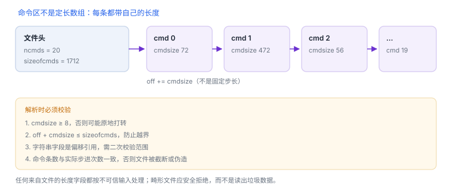

Mach-O 加载命令
头部给出目录，加载命令逐条描述映像如何被使用
解析 Mach-O 的顺序是固定的：先读头部确认坐标系，再按命令长度逐条步进，最后才去解释段与符号。跳过前两步直接看地址，几乎必然出错。
1. 头部关键字段
| 字段 | 作用 | 解读要点 |
|---|---|---|
| magic | 标识 32/64 位与字节序 | 64 位常见值为 0xfeedfacf |
| cputype / cpusubtype | 目标架构 | 与切片、符号文件必须一致 |
| filetype | 可执行/动态库/包 | 决定加载方式与可用的命令 |
| ncmds / sizeofcmds | 命令数量与总长度 | 解析时据此校验边界 |
| flags | 属性位 | 如位置无关标志，影响地址计算 |
头部本身不描述任何地址。它只保证你能安全地走到加载命令区。
2. 常见加载命令
| 命令 | 描述什么 |
|---|---|
| LC_SEGMENT_64 | 段名、虚拟地址、大小、文件偏移、初始与最大权限 |
| LC_LOAD_DYLIB | 依赖库的安装名与版本要求 |
| LC_RPATH | 运行时搜索路径，供 @rpath 解析 |
| LC_SYMTAB / LC_DYSYMTAB | 符号表与动态符号表的位置 |
| LC_UUID | 该映像构建的唯一标识，符号化依赖它 |
| LC_BUILD_VERSION | 构建平台与最低系统版本 |
| LC_CODE_SIGNATURE | 签名数据在文件中的范围 |
| LC_MAIN | 可执行文件的入口偏移 |
命令列表不是模板：不同文件类型、工具链与构建配置会带来不同组合。看到“某命令不存在”时，先确认文件类型与构建方式，再判断是否异常。
Load command 1
cmd LC_SEGMENT_64
cmdsize 472
segname __TEXT
vmaddr 0x0000000100000000
vmsize 0x0000000000008000
fileoff 0
filesize 32768
maxprot 0x00000005
initprot 0x00000005
nsects 5
flags 0x0读法：cmdsize 472 说明长度可变，不能按固定步长遍历；vmaddr 是首选地址而非运行时地址；initprot 0x5 是读+执行（0x1 读、0x2 写、0x4 执行）；nsects 5 表示后面还有 5 个节描述。

/bin/ls (architecture x86_64):
Load command 9
cmd LC_BUILD_VERSION
cmdsize 32
platform MACOS
minos 10.14
sdk 15.7
ntools 1读法：platform 区分 macOS、iOS 与模拟器；minos 是最低系统版本，sdk 是构建所用 SDK。三者任意一项与依赖不匹配，都可能在启动或首次调用时暴露。
3. 原理推演：为什么只能按 cmdsize 步进
加载命令里有变长内容：库路径、段名、节名。头部的 ncmds 只告诉你“有几条”，sizeofcmds 只告诉你“一共多长”，没有任何一个字段能推出下一条的位置。
唯一可靠的信息是每条命令自带的 cmdsize。不读 cmdsize 就无法定位下一条；这也解释了为什么自写解析器读到第二条就乱码——它假设了固定长度。
4. 解析时容易踩的坑
- 命令长度可变：不能用固定步长遍历，必须读每条命令的
cmdsize前进。 - 字符串是偏移引用：依赖名、段名通常以文件内偏移指向，越界读取会得到无意义字符串。
- 通用二进制要先选切片：Fat 文件外层不是 Mach-O，需先按架构定位切片偏移。
- 虚拟地址与文件偏移不是同一量纲：段的文件偏移通常小于虚拟地址，二者不能互换。
自写解析器必须校验文件长度、命令边界、整数溢出与对齐。任何来自文件的长度字段都应按“不可信输入”处理，越界即拒绝。
cmd LC_MAIN
cmdsize 24
entryoff 2400
stacksize 0
cmd LC_UUID
cmdsize 24
uuid A36186A9-943D-3974-ADCC-18821C669F95读法：entryoff 是相对文件起点的入口偏移，不是虚拟地址；stacksize 0 表示用系统默认主线程栈；LC_UUID 是符号化与匹配符号文件的唯一依据——版本号相同不代表 UUID 相同。上例是系统二进制的 UUID，同一系统构建下所有机器一致，不含任何设备信息。
| 切片 | platform | minos | sdk |
|---|---|---|---|
/bin/ls x86_64 | MACOS | 10.14 | 15.7 |
/bin/ls arm64e | MACOS | 11.0 | 15.7 |
| Calculator arm64e | MACOS | 15.7 | 15.7 |
同一文件的切片可以有不同 minos；而应用包的 minos 就是它的最低支持系统。判断“能不能跑”要看实际加载的切片，不是文件名。
5. 最小解析示例
import struct
data = open("YourApp", "rb").read()
magic, cputype, cpusubtype, filetype, ncmds, sizeofcmds, flags, _ = struct.unpack_from("<IiiIIIII", data, 0)
assert magic == 0xfeedfacf, "not a 64-bit Mach-O"
off = 32
for _ in range(ncmds):
cmd, cmdsize = struct.unpack_from("<II", data, off)
if cmdsize < 8 or off + cmdsize > len(data):
raise ValueError("bad load command")
print(hex(cmd), cmdsize)
off += cmdsize示例故意省略了命令语义，只验证“能否安全走完命令区”。真实工具还需处理字节序、Fat 外层与各类命令的结构体差异。
6. 可验证实验
- 对自己构建的产物导出加载命令列表，标出与段、依赖、符号、签名相关的命令各有哪些。
- 比较 Debug 与 Release 的命令差异（例如符号相关命令、优化相关标志），解释差异来源。
- 把一个非 Mach-O 文件喂给解析器，确认它安全拒绝而不是崩溃或读出垃圾数据。
延伸：15 Mach-O 与地址空间 · 05 dyld 与程序加载 · F02 跳板结构
7. 一次真实排查记录：命令区被截断
- 现象：自写解析器读到第 N 条命令时越界，或读出的命令名是乱码。
- 先校验长度：
cmdsize是否小于 8，或off + cmdsize是否超过sizeofcmds。 - 再校验条数：实际步进次数与
ncmds是否一致。 - 看文件完整性：文件被截断或人为拼接时，命令区长度与头部声明不符。
- 结论与限制：记录“命令区越界源于长度未校验”，并注明所有来自文件的长度都要按不可信输入处理。
8. 工程权衡：自己解析还是用现成工具
| 方式 | 优势 | 代价 |
|---|---|---|
| 现成工具 | 快，格式细节由工具兜住 | 批量处理与自定义输出受限 |
| 自写解析 | 可批量、可定制、可接入流水线 | 必须自己处理边界与异常 |
| 混合 | 工具做验证，脚本做统计 | 需要对齐两者的口径 |
建议先用工具确认结论，再用自写脚本扩大样本量；反过来容易把解析 bug 当成“样本异常”。
cmd LC_CODE_SIGNATURE
cmdsize 16
dataoff 70240
datasize 18848读法：dataoff 是签名数据相对文件起点的偏移，datasize 是长度。签名不在头部，而在文件尾部的一块数据里；改文件任何字节都会让这段摘要失配。
9. 自测
- 为什么必须先读头部再读命令？
cmdsize在解析中起什么作用？忽略它会有什么后果？- 通用二进制与单一架构文件的解析入口有什么不同？